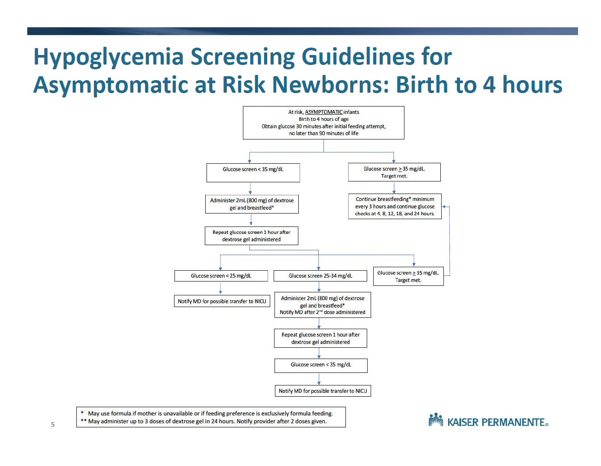
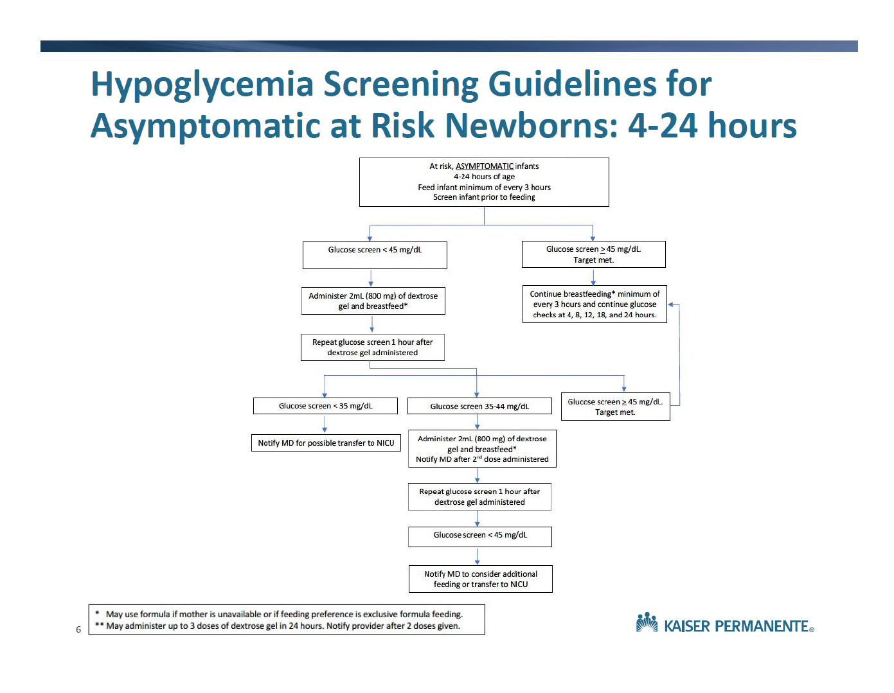

flowchart TD A["Mom with Graves Disease (hyperthyroidism) or history of Graves disease (hyperthyroidism)"] --> B["Obtain Thyroid Receptor Ab (TR Ab) or TSI in 2<sup>nd</sup>/3<sup>rd</sup> Trimester"] B --> C["Positive or unknwon TR Ab/TSI or<br>Negative TR Ab but active maternal hyperthyroidism<br><em>and/or</em><br>Treated with anti-thyroid drugs (PTU/methimazole)"] B --> D["NO current anti-thyroid treatment<br><em><u>and</u></em><br>NEGATIVE TR Ab/TSI in 2<sup>nd</sup>/3<sup>rd</sup> Trimester"] C --> E[High risk neonate] D --> F[No screening needed] E --> G["Obtain TR Ab/TSI in cord blood or nursery<br><em>If not done</em>: Order TR Ab/TSI, freeT4, TSH for outpatient draw in first 7 days of life"] G --> H["+ TR Ab/TSI = High risk neonate<br><em>(Observe for clinical symptoms of hyper/hypothyroidism)</em>"] G --> I["Negative TR Ab/TSI = Low risk neonate"] H --> J["Draw TSH and free T4 at 3-7 days<br><em>(if not done prior, or if symptomatic)</em>"] I --> K["No further work-up necessary"] J --> L["Abnormal results: send Dr. Advice to Peds Endo<br><em>(TSH < 1mIU/ml and/or free T4 > 2ng/dl is abnormal)</em>"] J --> M["Normal TSH, free T4 for age"] M --> K
16 Endocrinology
16.1 Hypoglycemia
Hypoglycemia definition
Age-dependent criteria (based on regional agreement):
- Birth to < 48 hrs of life: 45mg/dL
- ≥ 48 hrs of life: 60mg/dL
Family Care Center approach to hypoglycemia screening
[Download]
Target population
- GA < 37 weeks
- BW ≥ 4,000g
- BW ≤ 2,500g
- IDM
- Other infants identified at the discretion of the provider
0-4 hours of life
Goal: Glucose ≥ 35 mg/dL

4-24 hours of life
Goal: Glucose ≥ 45 mg/dL

Critical labs for refractory hypoglycemia
Indication
Consider obtaining critical laboratory tests for infants requiring a glucose infusion rate greater than 10 mg/kg/min, when, based on gestational and chronological age, they would not typically require intravenous fluids.
Laboratory tests to order
- Tier 1
| #ID | Code | Description | Tube | Volume |
|---|---|---|---|---|
| 1 | 82947A | Serum glucose | PST4 green top | 0.4ml |
| 2 | 83525B | Insulin | GLD6 gold top | 0.4ml |
| 3 | 82533A | Cortisol | GLD6 gold top | 0.4ml |
| 4 | 82010A | Beta-hydroxybutyric acid | GLD6 gold top | 1ml |
| 5 | 83003B | Human growth hormone | RED7 red top | 1ml |
| 6 | 80051P | Electrolyte panel | PST4 green top | 0.2ml |
- Tier 2
| #ID | Code | Description | Tube | Volume |
|---|---|---|---|---|
| 1 | 84210B | Pyruvic acid | Special tube/handling instructions: contact lab |
1ml |
| 2 | 82140B | Ammonia | Special tube/handling instructions: contact lab |
0.4ml |
| 3 | 82024B | ACTH | Special tube/handling instructions: contact lab |
1ml |
| 4 | 82533U | Cortisol, Neonatal | RED7 red top | 0.4ml |
| 5 | 84443B | TSH | GLD6 gold top | 0.4ml |
| 6 | 84439B | T4, free | GLD6 gold top | 0.4ml |
| 7 | 82725B | Free fatty acids | RED7 red top | 0.6ml |
| 8 | 82017B | Acylcarnitine profile, plasma | GRN5 green top | 1ml |
| 9 | 82139C | Amino acids, plasma | GRN5 green top | 2ml |
| 10 | 83918C | Organic acids, urine | Urine container | 15ml |
Tier 3
Blood gas for pH, BE, and lactate
Possible blood specimen source
Capillary:
- Heel stick
Venous:
- Freshly placed PIV
- UVC
- PowerPICC (not routinely seen in our NICU)
Arterial:
- Radial/ulnar artery puncture
- UAC
- PAL
Procedure for inducing hypoglycemia (need to discuss further)
- Identify the lab tests, verify order entry.
- Determine the total volume needed.
Physicians should be mindful of the practicality of the exsanguinated volume. - Identify the source of blood specimen.
- D10W 2mL/kg bolus syringe available at bedside.
- Discontinue IV fluid.
- Check POC glucose every 30min until level < 55mg/dL.
- Check POC glucose every 15min until level < 45mg/dL.
- Obtain blood specimen.
- Check POC glucose. If < 40mg/dL, administer D10W 2mL/kg bolus once.
- Restart IV fluid.
- Check POC glucose every 30min until > 60mg/dL.
Sliding scale for IV dextrose weaning
Need consensus
- Wean by 2ml/hr for AC POC Glucose >80 (or 75)
- Wean by 1mL/hr for AC POC Clugose 70-80 (or 65-75)
- Increase by 1mL/hr for AC POC glucose 50-60 (or 45-55)
- Increase by 2mL/hr for AC POC Glucose < 50 (or <45), and notify MD
- Once off IV, continue to check sugars until >60 on 3 consecutive checks.
16.2 Secondary Screening for Neonatal Thyroid Conditions
Indications and Screening
| Indication | Screening needed |
|---|---|
| Monochorionic twins/Multiple (Same-sex if chorionic status not known) | TSH at 2 weeks of age |
| ANY congenital heart disease diagnosis (exclude PDA) with infant hospitalized to at least day 14 | TSH at 2 weeks of age |
| Very low birth weight (≤ 1500 grams) | TSH at 2, 4, and 6 weeks of age if still hospitalized |
| Down syndrome | TSH at 2 weeks |
| Mother with history of or active hyperthyroidism/Graves disease | See: Managing Neonatal Graves Disease flowchart |
| Signs or symptoms of hypothyroidism (e.g., unexplained lethargy, bradycardia, jaundice, or constipation; abnormal neck imaging) | TSH and Free T4 as soon as symptoms are recognized |
| Signs or symptom of central hypothyroidism or hypopituitarism (e.g., craniofacial/midline defects, certain genetic syndromes, recurrent hypoglycemia, recalcitrant hypotension, micropenis) | TSH and free T4 along with other pituitary tests when signs or symptoms are recognized |
| Mother with hypothyroidism or Hashimoto thyroiditis and no history of Graves disease |
Routine newborn screen only |
Important
- Screening TSH ≥10 mIU/L is abnormal: immediately repeat TSH adding free T4 as well and discuss results once available with endocrinology promptly.
- If the test will be performed as outpatient, please order the test and document under problem list thyroid disorder screening V77.0A
- Consider TSH only in premature infants (without reflex free T4). Appropriate Health Connect Order: TSH, NO REFLEX (order 84443O).
- If considering tests for strong suspicion of hypothyroidism or hypopituitarism, discussion with endocrinology is recommended for all results. If suspicion for pathology is low, discuss with endocrinology if results are outside reference range.
Guide for interpretation of thyroid function studies
Note
Normal values are not fully established in the first 2 months of life and interpretation may differ if tests are done for screening or for symptomatic/diagnostic purposes. Free T4 levels may be less in NICU due to illness unrelated to thyroid disease. Significant topical iodine exposure may transiently alter thyroid function tests. Interpret with caution.
Asymptomatic screening (0-60 days old)
TSH
- Hypothyroidism screening: < 10mIU/L
- maternal Graves/hyperthyroidism: use lab-provided reference
Free T4
- Use lab-provided reference
Symptomatic/diagnostic testing
TSH
- Newborn ≤ 3 days old: 1-20 mIU/L
- Newborn > 3 days old: use lab-provided reference
Free T4
- Newborn ≤ 14 days old: 1.4-2.8 ng/dL
- Newborn > 14 days old: use lab-provided reference
16.3 Screening Guidelines for Neonatal Graves Disease
Note
Though TSI is acceptable it is preferred to screen with TR Ab (TSH receptor binding antibody)
16.4 Ambiguous Genitalia
Differential diagnosis
XY individual
- Defects in gene producing transcription factors along the pathway of testicular differentiation
- Defects in androgen synthesis & production
- Defect in androgen receptor response
- Disrupted müllerian inhibition
XX individual
- Gonadal overproduction of androgens due to mutations involved in gonadal (ovarian) development
- Adrenal overproduction of androgens
- Placental aromatase deficiency
- Maternal exogenous exposure to androgens
Physical findings to trigger workup
Frankly atypical genital appearance
Subtle presentation
Male
- micropenis:
- Full-term: stretched penile length < 2.5cm
- Preterm: normal stretched penile length (cm) = -2.27 + 0.16 x GA in week
- severe hypospadias (with or without cryptorchidism or micropenis)
Female
- clitoromegaly: width > 6mm or length > 9mm
- posterior labial fusion, with anogenital ratio > 0.5
- gonads palpable in the labioscrotal folds or the inguinal region
Workup
First days of life
STAT ORDERS
- Serum eletrolytes
- Serum glucose level
- Random cortisol
- 17-OHP: value affected by prematuirty, maternal steroid intake
- Renin
- Karyotyping
ROUTINE ORDERS
- Ultrasound of the abdomen/pelvis
- Growth hormone level (in the first 15 days of life)
- Prolactin (can help diagnose growth hormone deficiency)
- Free T4, free T4 by dialysis (can help diagnose hypopituitarism)
After 1 week of age and before 6-9 months of age (mini-puberty)
Assess pituitary gonadotropin function
- Pediatric LH
- FSH
Assess gonadal function
- Estradiol
- Testosterone
- Dihydrotestosterone
- Anti-Müllerian hormone
- reference range: boys > 30ng/mL; girls < 10ng/mL
- Higher AMH than female range (XX individual) indicates Sertoli cells present (ovotesticular DSD)
- AMH below typical male range (XY individual) indicates defect in testicular function
Additional Workup
- Skeletal survey
- MRI of the Sella with and without contrast
Consultation
- Pediatric endocrinology
- Pediatric urology
- Psychology
- Genetics
- Social worker
- Medical ethics
Congenital adrenal hyperplasia (CAH) treatment
- Fluid:
- D5NS without K at 1-2x maintenance
- consider 10mL/kg NS bolus if dehydrated
- Glucocorticoids (hydrocortisone):
- Start at 50mg/m2/day IV divided q4-6 hrs
- Mineralocorticoirds:
- Start fludrocortisone at 0.1mg qDay
- NaCl supplement: Start at 3-4 mEq/kg/day (4mEq/mL solution)
16.5 Undescended Testicle
For unilateral undescended (or non-palpable) testicle
- No need to order ultrasound
- Refere to Peds Urology for evaluation (there is a new hire at Fontana)
- May wait until 3 months of age to refer as some will descend by that time
- If there are othe rmalformations of the external genitalia (hypospadias) with undescended testicle(s), obtain labs as below an refer to Peds Urology without waiting until 3 months.
For bilateral undescended (or non-palpable) testicle
flowchart TD
A["Perform exam carefully and
repeatedly in a warm, relaxed state"] --> C["Yes"]
A --> B["No"]
B --> D["If the exam is unclear or uncertain,
it is best to <strong>obtain ultrasound</strong>
first, per Peds Endo"]
D --> E["If true bilateral undescended testes
on ultrasound report, endocrine work-
up should be ordered next."]
C --> F["If the provider is comfortable
in making the clinical assessment
without aid of ultrasound, then
endocrine workup should be
ordered next."]
F --> G["<div align='left';>
1. Testosteron, pediatric
2. LH, pediatric
3. FSH
4. AMH (anti-Mullerian hormone)
5. Karyotype
6. 17-OH progesterone
Call Peds Endo.
Do NOT discharge baby or give sex assignment
until workup evaluated by Peds Endo.
</div>
"]
E --> G
D --> H["If testes are high scrotum or
low in the inguinal canal,
refer to Peds Urology for exam
and follow-up.
Newborn screen for CAH."]